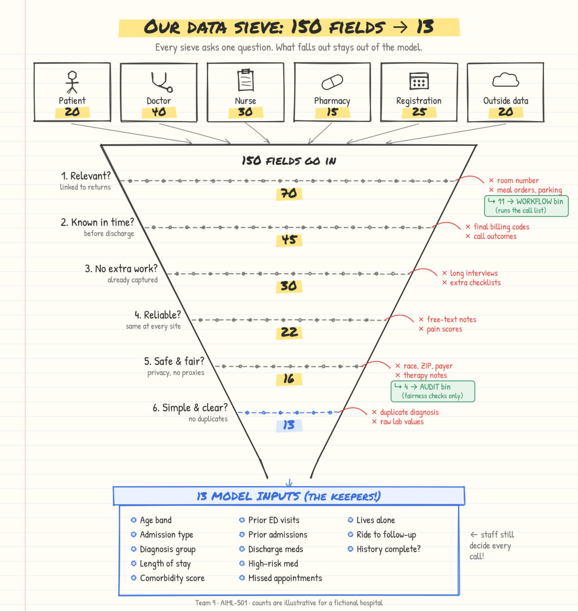
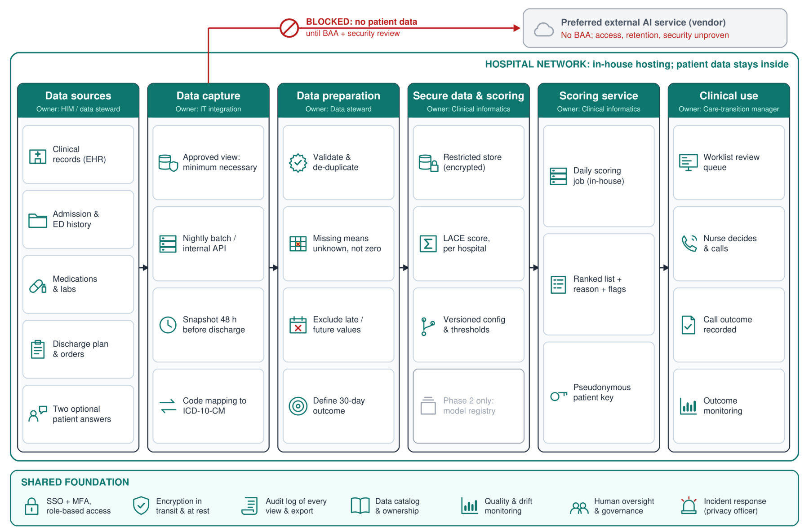
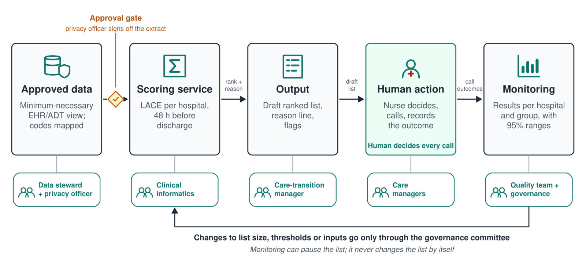

A daily call list that informs, never replaces, clinical judgment
Four of us designed how a fictional health organization could decide which discharged patients to call first: consistently, fairly and privately, with staff deciding every call. We worked through four timed rounds, and each round released new facts that forced us to rethink the plan together.
The Team
This was a team project from the first whiteboard sketch to the final decision record. Every decision below was made, challenged and revised by all four of us.
How we worked together
One shared decision record
Every round's decision, the reasoning behind it, what we still did not know and whether it changed went into one team document. No decision lived only in one person's head.
Sketch together, then write
We drew the data sieve and the architecture on paper during the residency before writing a word, so all four of us argued over the same picture.
Change our minds in the open
When new facts arrived, the log records what changed: 13 inputs narrowed to 7, and the pause point moved from outcome data to the data extract.
Check before committing
Before interpreting the model results in Round 3, we confirmed three points with the professor, including that "care settings" meant our two hospitals.
Keep hard questions open
Should the list target the patients most at risk, or the ones a call would help most? We never pretended to settle it; it stayed on our open-questions list every round.
Agree on what stays human
Early on we agreed that the list never removes anyone from standard care and never decides a call. That shared rule shaped every later round.
Four Rounds, Four Team Decisions
Each round released new information. The plan below is what the team agreed after each one.
- Round 1Problem and approach
Staff choose whom to call by rules of thumb that vary by unit. We chose a daily ranked list using the LACE index plus two optional patient answers, with no new model, and kept a trained model for phase 2 only if it beats LACE.
Agreed - Round 2Data and testing
New facts: two hospitals code differently, discharge summaries arrive late, and the proposed extract exposed too much. We cut the inputs to 7, ranked within each hospital, and paused all data movement until a minimum-necessary extract is approved.
Paused at extract approval - Round 3Performance
A supplied model scored 80% recall and 25% precision. Per 1,000 discharges that means flagging about half of all patients, with 3 of every 4 calls unnecessary, and no results per hospital. We declined to deploy it.
Do not deploy the model - Round 4Infrastructure
The preferred external service had no business associate agreement (BAA) and unproven controls. Version 1 needs no vendor, so we run it in-house in shadow mode and keep the external service blocked.
Conditional deployment
Our Team's Data Sieve
Sketched together during the residency. About 150 candidate fields from six sources pass six questions; whatever falls out stays out of the score.

Use Case, Users and Approach
The problem
A follow-up team cannot call every discharged patient, and today's rules of thumb miss people who live alone, lack transport or have thin records.
The decision supported
Each day, which recently discharged patients should the existing care-transition team contact first?
Users
Care managers and transition nurses who already make follow-up calls. Physicians and bedside nurses get no new tasks.
People affected
Discharged adults and their families, including those not prioritized. The list never removes anyone from standard care.
What it predicts
Risk of unplanned readmission, emergency return or death within 30 days, scored 48 hours before expected discharge. Death is included because dying at home is not a success.
Technical approach
LACE plus two optional patient answers, run as a daily in-house job and ranked within each hospital, with a one-line reason and flags per patient. Shadow mode first.
Architecture and Data Flow
- Approved sourceMinimum-necessary EHR and admission data, signed off by the privacy officer.
- PreparationValidate, de-duplicate, map both hospitals' codes, mark missing as unknown.
- ScoringLACE computed within each hospital, 48 hours before discharge.
- OutputA draft ranked list with a reason line and practical flags.
- Human reviewA nurse decides, calls and records the outcome.
- Feedback and monitoringResults by hospital and group; only governance changes the list.


Infrastructure Brief
Hosting and compute
A scheduled job in the hospital's existing data warehouse or EHR rules engine. No GPU, no training, and a daily batch is fast enough.
Model and API dependencies
None external for version 1. LACE is a published rules-based score. A trained model is phase 2 only, hosted in-house.
Access controls
Single sign-on with MFA and role-based views. The scoring job sees 7 inputs and a pseudonymous key; each care manager sees only their worklist.
Data retention
Daily lists kept 90 days, then purged; call outcomes kept in the record; HIPAA-required documentation kept six years.
Updates
LACE weights are fixed. The code mapping is reviewed quarterly and whenever either hospital changes its coding. Every change goes through governance.
Logging
Every view, export and configuration change is logged with user and time, and reviewed monthly and on any alert.
Security review
The chief information security officer reviews the job and the restricted store before go-live; encryption in transit and at rest.
Cost drivers
People, not compute: the data steward who maintains the code mapping, the care managers' calling time and committee time.
Operational ownership
Data steward and privacy officer (data), clinical informatics (scoring), care-transition manager (list), quality team and governance committee (monitoring).
Incident response
On a suspected disclosure: pause the list, contain, investigate, and notify patients no later than 60 days after discovery.
The Architecture Brief at a Glance
Recommendation: conditional deployment. Run version 1 in-house, in shadow mode first, once the privacy, security, workflow and governance approvals are signed. Do not deploy the preferred external AI service yet: it has no business associate agreement and has not proven its access, retention and security controls.
Key risks and controls
| Risk | Control |
|---|---|
| Vendor receives patient data without a BAA | Path blocked until a BAA and security review (SOC 2 Type II or HITRUST) |
| Over-broad extract | Privacy officer signs off a minimum-necessary view before any computation |
| Coding differs between hospitals | ICD-10-CM mapping, quarterly review, named data steward |
| Labels miss outside returns and deaths | Data-use agreement before any phase 2 model |
| List exceeds staff capacity | List size capped; two bands; governance sets thresholds |
| Unequal recall across groups | Demographics audit-only; monthly recall by group |
| Unauthorized disclosure | Pause the list, contain, notify within 60 days |
Trade-offs
| Choice | Gain | Cost |
|---|---|---|
| In-house LACE over external AI | No BAA needed; full control; explainable | Modest accuracy (C-statistic about 0.68) |
| Daily batch over real time | Cheap, fewer failure points | No intraday updates (not needed) |
| Rank within each hospital | Fair despite different coding | Lists not comparable across sites |
| Two score bands | Fits call capacity, keeps recall | Lower band gets a lighter touch |
| Model only in phase 2 | Must beat LACE first | Slower path to higher precision |
Monitoring cadence
- Daily: data-feed and code-mapping validation; alert on missing or late feeds.
- Weekly: list size against capacity, contact rate, 30-day returns and ED visits.
- Monthly: recall and precision by hospital and group with 95% ranges; access-log review.
- Ownership: the quality team reports to the governance committee, which alone changes size, thresholds or inputs.
Why This Approach
We compared five paths in Round 1 and three hosting options in Round 4. The simplest one that solves the real problem won.
✅ In-house LACE rules job
Transparent, cheap and fast, with no new model risk and no vendor. Moderate accuracy (C-statistic about 0.68), which a trained model must beat before it replaces it.
EHR vendor model
Already in the workflow, but proprietary and hard to audit. Kept as a comparator; adopted only if it passes local validation and fairness checks.
Locally trained model
Explainable and can be calibrated per hospital, but needs clean labels and ongoing revalidation. Phase 2, only if it beats LACE at both hospitals.
⛔ External AI service
Adds subscription, legal and security cost, depends on vendor uptime, and can change without notice. Blocked: no BAA and unproven controls.
Deployment and maintenance trade-off: the in-house job needs only the existing warehouse and a data steward, while a model or vendor adds revalidation, drift monitoring and vendor management for every version.
Approvals Before Any Protected Record Is Used
Technical feasibility is not legal permission. None of these is confirmed yet, so the next step is shadow mode, not live use.
- Minimum-necessary extract and role-based views: privacy officer. Blocks all data movement, even shadow testing.
- Security review of the in-house job and store: chief information security officer. Blocks version 1 go-live.
- Call workflow and script: nursing and clinical informatics leaders. Blocks staff using the list.
- Governance charter for list size, thresholds and stop rules: governance committee. Blocks moving from shadow mode to live use.
- Data-use agreement for outside-hospital and state death data: privacy officer and partners. Blocks any phase 2 model.
- BAA and security review for the external service: privacy officer, legal and security. Not provided by the vendor.
- Institutional review board: only if results are published.
What the System May and Must Not Do
The system may
- Extract the approved fields each night
- Compute LACE within each hospital and rank patients
- Show a draft list with a one-line reason and flags for limited history, an unverified phone and interpreter need
- Produce monitoring reports by hospital and group
The system must not
- Send identifiable data to any outside service without a BAA and security review
- Decide who is called, or skip a patient, on its own
- Use race, ethnicity, sex, payer or disability as inputs
- Use discharge summaries or other late data
- Change its own thresholds, list size or inputs
Pause, roll back or retire
- Pause on any unauthorized disclosure, a failed data feed or code mapping, or recall more than 10 points below average for any hospital or group in two monthly reviews
- Roll back to the previous approved configuration if a change makes results worse, or to today's manual selection if the list fails
- Retire the list if staff stop using it, if shadow mode shows no gain over manual selection, or if a validated replacement is approved
The Working Prototype
To test the method rather than just describe it, the team's design runs as a multi-agent prototype on synthetic data. Rule-based agents push 150 fields through the six sieves, human gates decide data access and adoption, and the final verdict uses 95% ranges rather than a single number.
Messy data on purpose
The synthetic feeds arrive with duplicates, typos, unit mix-ups, feed outages and a form change, and a cleaning step reports every fix.
Honest verdict
Point estimates looked better than LACE, but the 95% ranges crossed the bar, so the verdict was "hold, too uncertain."
Reasons, not just ranks
Each patient on the call list gets up to three plain-language reasons and a limited-history flag.
People decide the gates
In the live app, a named reviewer approves or declines each human gate before the agents run.
What We Learned
Each round made the problem less about the model and more about the organization around it. In Round 3 the question was whether a model was good enough. By Round 4 the harder questions were who owns each step, who may see what, and who can say stop. Working as a team made those questions impossible to skip: whenever one of us reached for a technical fix, someone else asked who would maintain it, who could see the data and what happens to the patient the list misses.
A system that cannot say who owns each step is not ready, however accurate it is.